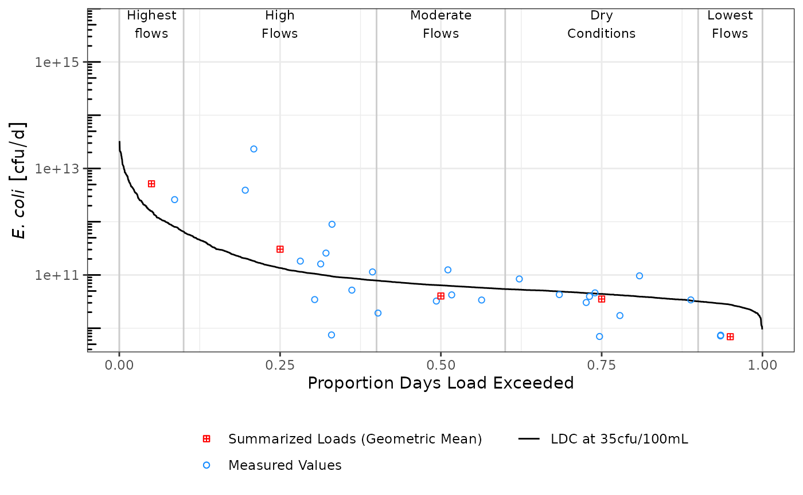

The goal of ldc is to provide functions for quickly creating pollutant load duration curves (LDCs). LDCs are an extension of flow duration curves (FDCs). The FDC is essentially a cumulative distribution plot with observed streamflow values on the y-axis, and the proportion of values that exceed a given flow value on the x-axis. Specifically, the FDC displays the exceedance probability \(p\) on the x-axis and the associated discharge (\(Q\)) on the y-axis (Vogel and Fennessey 1994). Typically, mean daily discharge is used to calculate the flow exceedance values. Using this approach, flows can be categorized into flow duration intervals such as “Flood Flows,” “High Flows,” “Moderate Flows,” and “Low Flows.”
The LDC is developed by multiplying allowable pollutant concentrations by the daily streamflow volume to identify allowable pollutant loads across flow duration intervals. Measured pollutant concentrations can be added to the duration curve by multiplying the concentrations and streamflow volume to derive an instantaneous load at a given exceedance percentile. By overlaying measured values over the LDC line, we can develop some inference for what conditions pollutant concentrations and loads exceed allowable concentrations. Cleland (2003) and Morrison and Bonta (2008) provide additional information for LDC development and use in pollutant loading assessments.
ldc requires a dataframe with at least two columns, discharge (\(Q\)) and measured pollutant concentrations (\(C\)). It is assumed, \(Q\) is mean daily discharge, any units can be used (cfs, cms, etc.) \(C\) can be any measured pollutant concentration associated with the value of \(Q\) on the same row. The package includes a dataset, tres_palacios, that demonstrates how this is formatted.
## load required packages
library(dplyr)
#>
#> Attaching package: 'dplyr'
#> The following objects are masked from 'package:stats':
#>
#> filter, lag
#> The following objects are masked from 'package:base':
#>
#> intersect, setdiff, setequal, union
## load example data
df <- as_tibble(tres_palacios) %>%
## filter this to the last 6 years of data
filter(Date >= as.Date("2014-01-01"))
## show the data filtered to paired Q and C observations
df %>% filter(!is.na(Indicator_Bacteria))
#> # A tibble: 27 × 4
#> site_no Date Flow Indicator_Bacteria
#> <chr> <date> <dbl> <dbl>
#> 1 08162600 2014-03-05 59.3 16000
#> 2 08162600 2014-06-17 13.6 52
#> 3 08162600 2014-10-02 20.4 250
#> 4 08162600 2014-12-04 66.5 2400
#> 5 08162600 2015-03-17 25.9 180
#> 6 08162600 2016-02-10 9.46 32
#> 7 08162600 2016-04-06 9.46 31
#> 8 08162600 2016-06-16 28.3 75
#> 9 08162600 2016-09-28 25.4 31
#> 10 08162600 2016-12-14 15.9 110
#> # … with 17 more rowsldc also utilizes the units package to handle unit conversions. Therefore, \(Q\) and \(C\) will need to be formatted as units objects before using any ldc functions. In the example below, we need to create a new unit, “cfu”, for the Indicator_Bacteria variable and change both Flow and Indicator_Bacteria to unit objects.
## load required packages
library(units)
#> udunits database from /usr/share/xml/udunits/udunits2.xml
## make the cfu unit
install_unit("cfu")
## change Q and C to unit objects with appropriate units
df <- df %>%
mutate(Flow = set_units(Flow, "ft^3/s"),
Indicator_Bacteria = set_units(Indicator_Bacteria, "cfu/100mL"))
df
#> # A tibble: 2,557 × 4
#> site_no Date Flow Indicator_Bacteria
#> <chr> <date> [ft^3/s] [cfu/100mL]
#> 1 08162600 2014-01-01 7.82 NA
#> 2 08162600 2014-01-02 7.64 NA
#> 3 08162600 2014-01-03 9.34 NA
#> 4 08162600 2014-01-04 7.42 NA
#> 5 08162600 2014-01-05 7.45 NA
#> 6 08162600 2014-01-06 6.79 NA
#> 7 08162600 2014-01-07 6.59 NA
#> 8 08162600 2014-01-08 7.28 NA
#> 9 08162600 2014-01-09 25.5 NA
#> 10 08162600 2014-01-10 29.4 NA
#> # … with 2,547 more rowsNow the dataframe is formatted for use in ldc functions. You can see the unit objects include the appropriate units when printed.
ldc is composed of three major functions:
calc_ldc() takes an input dataset of matched flow and pollutant concentrations to generate a dataframe with exceedance probabilities for allowable pollutant loads (the LDC), measured pollutant concentrations converted to loads, alongside user specified flow duration intervals.
summ_ldc() uses the output from calc_ldc() to generate a summary dataframe grouped by flow duration intervals.
draw_ldc() uses the output from both functions to generate an LDC figure as a ggplot object.
calc_ldc
The calc_ldc() function is the first function to run. It has six arguments:
.tbl is the dataframe formatted as described above.
Q is the variable name in .tbl for discharge or flow.
C is the variable name for measured pollutant concentration.
allowable_concentration is an object of class units specifying the allowable pollutant concentration (water quality standard). This must have the same units as C.
breaks is a numeric vector from (1 -> 0) that indicates the break points for flow duration intervals. The length of the vector should be 1 more than the number of flow duration intervals. For example, c(1, 0.9, 0.6, 0.4, 0.1, 0) has 6 breaks and 5 flow duration intervals.
labels is a vector with the names for each flow duration interval. For example, c("Highest flows", "High Flows", "Moderate Flows", "Dry Conditions", "Lowest Flows").
## set the allowable concentration
allowable_concentration <- 126
units(allowable_concentration) <- "cfu/100mL"
## calculate the ldc
df_ldc <- calc_ldc(df,
Q = Flow,
C = Indicator_Bacteria,
allowable_concentration = allowable_concentration,
breaks = c(1, 0.9, 0.6, 0.4, 0.1, 0),
labels = c("Highest flows", "High Flows", "Moderate Flows", "Dry Conditions", "Lowest Flows"))
## show the result
df_ldc %>% filter(!is.na(Indicator_Bacteria))
#> # A tibble: 27 × 9
#> site_no Date Flow Indicator_Bacteria Daily_Flow_Volume Daily_Load
#> <chr> <date> [ft^3/s] [cfu/100mL] [100mL/d] [cfu/d]
#> 1 08162600 2016-02-10 9.46 32 231446047. 7.41e 9
#> 2 08162600 2016-04-06 9.46 31 231446047. 7.17e 9
#> 3 08162600 2020-08-24 10.7 130 261783583. 3.40e10
#> 4 08162600 2019-10-15 12.7 310 310715094. 9.63e10
#> 5 08162600 2014-06-17 13.6 52 332734274. 1.73e10
#> 6 08162600 2018-07-24 14.3 20 349860303. 7.00e 9
#> 7 08162600 2020-10-28 14.5 130 354753454. 4.61e10
#> 8 08162600 2020-05-06 14.7 110 359646605. 3.96e10
#> 9 08162600 2020-01-15 14.8 84 362093181. 3.04e10
#> 10 08162600 2016-12-14 15.9 110 389005512. 4.28e10
#> # … with 17 more rows, and 3 more variables: Allowable_Daily_Load [cfu/d],
#> # P_Exceedance <dbl>, Flow_Category <fct>summ_ldc
The summ_ldc() function is the second function to run. It has six arguments:
.tbl is a dataframe, preferably the output from calc_ldc() or formatted exactly like it.
Q is the variable name in .tbl for discharge or flow.
C is the variable name in .tbl for measured pollutant concentration.
Exceedance is the variable name in .tbl for flow exceedance probabilities. This defaults to the output created by calc_ldc() so in most cases you can leave it alone.
groups is the variable name in .tbl with the flow interval names. This defaults to the output created by calc_ldc() so in most cases you can leave it alone.
method is a string describing the method desired for summarizing pollutant concentration. It can be one of "geomean", "mean", or "median".
df_sum <- summ_ldc(df_ldc,
Q = Flow,
C = Indicator_Bacteria,
Exceedance = P_Exceedance,
groups = Flow_Category,
method = "geomean")
df_sum
#> # A tibble: 5 × 6
#> Flow_Category Median_Flow Median_P Geomean_C Median_Daily_Fl… Median_Flow_Load
#> <fct> [ft^3/s] <dbl> [cfu/100mL] [100mL/d] [cfu/d]
#> 1 Highest flows 514 0.0500 410 12575398304. 5.16e12
#> 2 High Flows 43.9 0.25 284. 1074046664. 3.05e11
#> 3 Moderate Flo… 20.8 0.5 79.2 508887713. 4.03e10
#> 4 Dry Conditio… 14.3 0.75 101. 349860303. 3.54e10
#> 5 Lowest Flows 9 0.950 31.5 220191799. 6.94e 9draw_ldc
The final function is draw_ldc() which uses the output from the previous two functions to generate a plot as a ggplot object. There are many arguments in this function, I won’t describe them all but details are available using ?draw_ldc. Importantly, since the output is a ggplot object, the output can be modified using many of the available ggplot functions.
library(ggplot2)
p1 <- draw_ldc(df_ldc,
df_sum,
y_lab = expression(paste(italic("E. coli"))),
ldc_legend_name = "LDC at 35cfu/100mL",
measurement_name = "Measured Values",
summary_name = "Summarized Loads (Geometric Mean)",
label_nudge_y = log10(1000)) +
scale_y_log10() +
annotation_logticks(sides = "l") +
theme_bw() +
theme(legend.title = element_blank(),
legend.direction = "vertical",
legend.position = "bottom")
p1
#> Warning: Removed 2530 rows containing missing values (geom_point).
Cleland, Bruce. 2003. TMDL Development from the “Bottom up” – Part Iii: Duration Curves and Wet-Weather Assessments. America’s Clean Water Foundation. www.researchgate.net/publication/228822472_TMDL_Development_from_the_Bottom_Up-_PART_III_Durations_Curves_and_Wet-Weather_Assessments.
Morrison, Matthew A, and James V Bonta. 2008. “Development of Duration-Curve Based Methods for Quantifying Variability and Change in Watershed Hydrology and Water Quality.” EPA/600/R-08/065. U.S. Environmental Protection Agency. https://nepis.epa.gov/Exe/ZyPURL.cgi?Dockey=P1000VR4.txt.
Vogel, Richard M., and Neil M. Fennessey. 1994. “Flow‐Duration Curves. I: New Interpretation and Confidence Intervals.” Journal of Water Resources Planning and Management 120 (4): 485–504. https://doi.org/10.1061/(ASCE)0733-9496(1994)120:4(485).